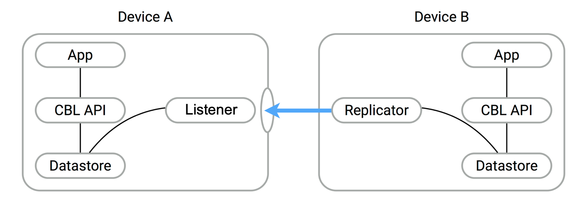

Peer-to-Peer Sync
Couchbase Lite’s Peer-to-Peer Synchronization enables edge devices to synchronize securely without consuming centralized cloud-server resources
Introduction
This is an Enterprise Edition feature.
Couchbase Lite’s Peer-to-Peer synchronization solution offers secure storage and bidirectional data synchronization between edge devices without needing a centralized cloud-based control point.
Couchbase Lite’s Peer-to-Peer data synchronization provides:
- Instant WebSocket-based listener for use in Peer-to-Peer applications communicating over IP-based networks
- Simple application development, enabling sync with a short amount of code
- Optimized network bandwidth usage and reduced data transfer costs with Delta Sync support
- Securely sync data with built-in support for Transport Layer Security (TLS) encryption and authentication support
- Document management. Reducing conflicts in concurrent writes with built-in conflict management support
- Built-in network resiliency
Overview
Peer-to-Peer synchronization requires one Peer to act as the Listener to the other Peer’s replicator.

Peer-to-Peer synchronization requires one Peer to act as the Listener to the other Peer’s replicator. Therefore, to use
Peer-to-Peer synchronization in your application, you must configure one Peer to act as a Listener using the Couchbase
Listener API, the most important of which include URLEndpointListener and URLEndpointListenerConfiguration.
Example 1. Simple workflow
- Configure the listener (passive peer, or server)
- Initialize the listener, which listens for incoming WebSocket connections (on a user-defined, or auto-selected, port)
- Configure a replicator (active peer, or client)
- Use some form of discovery phase, perhaps with a zero-config protocol such as Network Service Discovery for Android or Bonjour for iOS, or use known URL endpoints, to identify a listener
- Point the replicator at the listener
- Initialize the replicator
- Replicator and listener engage in the configured security protocol exchanges to confirm connection
- If connection is confirmed then replication will commence, synchronizing the two data stores
Here you can see configuration involves a Passive Peer and an Active Peer and a user-friendly listener configuration in Basic Setup.
You can also learn how to implement Peer-to-Peer synchronization by referring to our tutorial — see Getting Started with Peer-to-Peer Synchronization.
Features
Couchbase Lite’s Peer-to-Peer synchronization solution provides support for cross-platform synchronization, for example, between Android and iOS devices.
Each listener instance serves one Couchbase Lite database. However, there is no hard limit on the number of listener instances you can associate with a database.
Having a listener on a database still allows you to open replications to the other clients. For example, a listener can actively begin replicating to other listeners while listening for connections. These replications can be for the same or a different database.
The listener will automatically select a port to use or a user-specified port. It will also listen on all available networks, unless you specify a specific network.
Security
Couchbase Lite’s Peer-to-Peer synchronization supports encryption and authentication over TLS with multiple modes, including:
- No encryption, for example, clear text.
- CA cert
- Self-signed cert
- Anonymous self-signed — an auto-generated anonymous TLS identity is generated if no identity is specified. This TLS
identity provides encryption but not authentication.
Any self-signed certificates generated by the convenience API are stored in secure storage.
The replicator (client) can handle certificates pinned by the listener for authentication purposes.
Support is also provided for basic authentication using username and password credentials. Whilst this can be used in clear text mode, developers are strongly advised to use TLS encryption.
For testing and development purposes, support is provided for the client (active, replicator) to skip verification of self-signed certificates; this mode should not be used in production.
Error Handling
When a listener is stopped, then all connected replicators are notified by a WebSocket error. Your application should distinguish between transient and permanent connectivity errors.
Passive peers
A Passive Peer losing connectivity with an Active Peer will clean up any associated endpoint connections to that peer. The Active Peer may attempt to reconnect to the Passive Peer.
Active peers
An Active Peer permanently losing connectivity with a Passive Peer will cease replicating.
An Active Peer temporarily losing connectivity with a passive Peer will use exponential backoff functionality to attempt reconnection.
Delta Sync
Optional delta-sync support is provided but is inactive by default.
Delta-sync can be enabled on a per-replication basis provided that the databases involved are also configured to permit it. Statistics on delta-sync usage are available, including the total number of revisions sent as deltas.
Conflict Resolution
Conflict resolution for Peer-to-Peer synchronization works in the same way as it does for Sync Gateway replication, with both custom and automatic resolution available.
Basic Setup
You can configure a Peer-to-Peer synchronization with just a short amount of code as shown here in Example 2 and Example 3.
Example 2. Simple Listener
This simple listener configuration will give you a listener ready to participate in an encrypted synchronization with a replicator providing a valid username and password.
- Initialize the listener configuration
- Configure the client authenticator to require basic authentication
- Initialize the listener
- Start the listener
Example 3. Simple Replicator
This simple replicator configuration will give you an encrypted, bi-directional Peer-to-Peer synchronization with automatic conflict resolution.
val listenerEndpoint = URLEndpoint("wss://10.0.2.2:4984/db")
val repl = Replicator(
ReplicatorConfigurationFactory.newConfig(
collections = mapOf(collections to null),
target = listenerEndpoint,
authenticator = BasicAuthenticator("valid.user", "valid.password.string".toCharArray()),
acceptOnlySelfSignedServerCertificate = true
)
)
repl.start()
this.replicator = repl
- Get the listener’s endpoint. Here we use a known URL, but it could be a URL established dynamically in a discovery phase.
- Initialize the replicator configuration with the collections of the database to be synchronized and the listener it is to synchronize with.
- Configure the replicator to expect a self-signed certificate from the listener.
- Configure the replicator to present basic authentication credentials if the listener prompts for them (client authentication is optional).
- Initialize the replicator.
- Start the replicator.
API Highlights
URLEndpointListener
The URLEndpointListener is the listener for peer-to-peer
synchronization. It acts like a passive replicator, in the same way that Sync Gateway does in a 'standard' replication.
On the client side, the listener’s endpoint is used to point the replicator to the listener.
Core functionalities of the listener are:
- Users can initialize the class using a
URLEndpointListenerConfigurationobject. - The listener can be started, or can be stopped.
- Once the listener is started, a total number of connections or active connections can be checked.
URLEndpointListenerConfiguration
Use URLEndpointListenerConfiguration to
create a configuration object you can then use to initialize the listener.
This is the port that the listener will listen to.
If the port is zero, the listener will auto-assign an available port to listen on.
Default value is zero. When the listener is not started, the port zero.
Use this to select a specific Network Interface to use, in the form of the IP Address or network interface name.
If the network interface is specified, only that interface wil be used.
If the network interface is not specified, all available network interfaces will be used.
The value is null if the listener is not started.
You can use URLEndpointListenerConfiguration's isTlsDisabled property to disable TLS communication if necessary.
The isTlsDisabled setting must be false when Client Cert Authentication is required.
Basic Authentication can be used with, or without, TLS.
isTlsDisabled works in conjunction with TLSIdentity, to enable
developers to define the key and certificate to be used.
- If
isTlsDisabledistrue— TLS communication is disabled andtlsIdentityis ignored.
Active peers will use thews://URL scheme used to connect to the listener. - If
isTlsDisabledisfalseor not specified — TLS communication is enabled.
Active peers will use thewss://URL scheme to connect to the listener.
Use URLEndpointListenerConfiguration's tlsIdentity property to configure the TLS Identity used in TLS communication.
If TLSIdentity is not set, then the listener uses an auto-generated
anonymous self-signed identity (unless isTlsDisabled = true). Whilst the client cannot use this to authenticate the
server, it will use it to encrypt communication, giving a more secure option than non-TLS communication.
The auto-generated anonymous self-signed identity is saved in secure storage for future use to obviate the need to re-generate it.
When the listener is not started, the identity is null. When TLS is disabled, the identity is always null.
Use this to specify the authenticator the listener uses to authenticate the client’s connection request. This should be set to one of the following:
ListenerPasswordAuthenticatorListenerCertificateAuthenticatornull— there is no authentication
Use this to allow only pull replication. The default value is false.
The option to enable Delta Sync and replicate only changed data also depends on the delta sync settings at database
level. The default value is false.
Security
Authentication
Peer-to-Peer sync supports Basic Authentication and
TLS Authentication. For anything other than test
deployments, we strongly encourage the use of TLS. In fact, Peer-to-Peer sync using URLEndpointListener is encrypted
using TLS by default.
The authentication mechanism is defined at the endpoint level, meaning that it is independent of the database being replicated. For example, you may use basic authentication on one instance and TLS authentication on another when replicating multiple database instances.
Note
The minimum supported version of TLS is TLS 1.2.
Peer-to-Peer synchronization using URLEndpointListener supports certificate based authentication of the server and-or
listener:
- Replicator certificates can be: self-signed, from trusted CA, or anonymous (system generated).
- Listeners certificates may be: self-signed or trusted CA signed.
Where a TLS certificate is not explicitly specified for the listener, the listener implementation will generate anonymous certificate to use for encryption. - The
URLEndpointListenersupports the ability to opt out of TLS encryption communication.
Active clients replicating with a URLEndpointListener have the option to skip validation of server certificates when the listener is configured with self-signed certificates.
This option is ignored when dealing with CA certificates.
Using Secure Storage
TLS and its associated keys and certificates might require using secure storage to minimize the chances of a security breach. The implementation of this storage differs from platform to platform. Table 1 summarizes the secure storage used to store keys and certificates for each platform.
Table 1. Secure storage details
| Platform | Key & Certificate Storage | Notes | Reference |
|---|---|---|---|
| Android | Android System KeyStore |
|
link |
| MacOS/iOS | KeyChain | Use kSecAttrLabel of the SecCertificate to store the TLSIdentity’s label |
link |
| Java | User Specified KeyStore |
|
link |